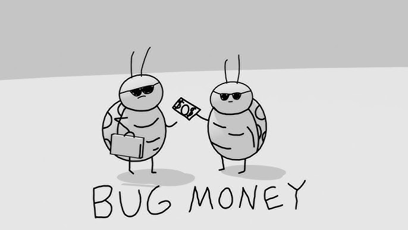
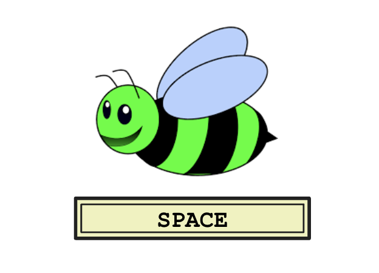

<!DOCTYPE html>
<html>
  <head>
    <title>My experiment</title>
    <script src="jspsych/jspsych.js"></script>
    <script src="jspsych/plugin-html-keyboard-response.js"></script>
    <script src="jspsych/plugin-html-button-response.js"></script>
    <script src="jspsych/plugin-image-keyboard-response.js"></script>
    <script src="jspsych/plugin-preload.js"></script>
    <script src="jspsych/plugin-call-function.js"></script>
    <script src="jspsych/plugin-fullscreen.js"></script>
    <script src="jatos.js"></script>
    <link href="jspsych/jspsych.css" rel="stylesheet" type="text/css" />
    <link href="css/style.css" rel="stylesheet" type="text/css"></link>
  </head>
  <body></body>
  <script>
    
    const jsPsych = initJsPsych({
      use_webaudio: false,
      on_finish: function() {
        if (typeof jatos !== 'undefined') {
          jatos.submitResultData(jsPsych.data.get().json());
          jatos.startNextComponent();
        }
      },
      on_interaction_data_update: function(data) {
        if(data.event == 'fullscreenexit'){
          forceEnd("fullscreenexit");
        }
      },
      // Using progress bar to display bonus reward to participant
      show_progress_bar: true,
      auto_update_progress_bar: false,
      message_progress_bar: 'Bonus earned'
    });

    // type 5 function
    const labelingFunction = {
      '001': 0,
      '101': 0,
      '000': 0,
      '110': 0,
      '011': 1,
      '010': 1,
      '111': 1,
      '100': 1,
    }

    const central = {
      '001': 0,
      '101': 0,
      '000': 0,
      '011': 1,
      '010': 1,
      '111': 1,
    }

    const exceptions = {
      '110': 0,
      '100': 1,
    }
    
    const numFeatures = 3; 
    const bonusPerTrial = 0.9;
    const numTestBlocks = 2
    const numMetalearningBlocks = 4

    // Variables to be read in from URLparams
    var prolificId
    var studyId

    // Randomize goodbee badbee assignment to keys
    const goodBeesOnLeft = Math.random() < 0.5

    // Randomize the response map
    const randomResponse = Math.floor(Math.random() * 2);
    const responseMap = {
      'a': randomResponse === 0 ? 0 : 1,
      'l': randomResponse === 0 ? 1 : 0,
      ' ': ' ',
      null: null
    };

    // shuffle feature dimension assignment (e.g. index 0 -> wings, index 1 -> pattern) and generate value assignment for each feature (e.g. 0->stripes, 1->dots)
    function generateFeatureAssignment(numFeatures) {
      const featureIndices = [...Array(numFeatures).keys()];
      for (let i = featureIndices.length - 1; i > 0; i--) {
        const j = Math.floor(Math.random() * (i + 1));
        [featureIndices[i], featureIndices[j]] = [featureIndices[j], featureIndices[i]];
      }
      const featureAssignment = Object.fromEntries(featureIndices.map((val, index) => [index, val]));
      const flipFeatureValues = Array.from({ length: numFeatures }, () => Math.random() < 0.5);
      return {featureAssignment, flipFeatureValues};
    }

    function getImagePath(input, metalearningAssignment) {
      if (input == 'catch') {
        return "assets/img/bugs/catch.png";
      }
      const color = metalearningAssignment['color']
      const featureAssignment = metalearningAssignment['randomization']['featureAssignment']
      const flipFeatureValues = metalearningAssignment['randomization']['flipFeatureValues']
      const output =  "assets/img/bugs/" + color + "-" + input
        .split('')
        .map((bit, index) => (flipFeatureValues[featureAssignment[index]] && input[featureAssignment[index]]!='x') ?  1-input[featureAssignment[index]] : input[featureAssignment[index]])
        .join('-') + ".png";
      return output
    }

    const metalearningAssignment = jsPsych.randomization.repeat([
        {color: 'red', randomization: generateFeatureAssignment(numFeatures)},
        {color: 'blue', randomization: generateFeatureAssignment(numFeatures)}
    ], 1)


    // generate 5 stim maps with specified central/peripheral counts
    const centralEntries = Object.entries(central).map(([stim, correct_response]) => ({stim, correct_response, catch: false, task_part: 'learning'}));
    const peripheralEntries = Object.entries(exceptions).map(([stim, correct_response]) => ({stim, correct_response, catch: false, task_part: 'learning'}));
    const catchEntry = [{stim:'catch', correct_response: ' ', catch: true, task_part: 'learning'}]
    const catchCount = 4; // number of catch trials per 48 task trials

    function buildStimMap(centralCount, peripheralCount, catchCount){
      return arr = [
        ...Array(centralCount).fill(centralEntries).flat(),
        ...Array(peripheralCount).fill(peripheralEntries).flat(),
        ...Array(catchCount).fill(catchEntry).flat()
      ]
    }

    // Stim maps for curriculum conditions
    var stimMap = [
      buildStimMap(8, 0, catchCount),   // 1: 8x central
      buildStimMap(7, 3, catchCount),   // 2: 7x central, 3x peripheral
      buildStimMap(6, 6, catchCount),   // 3: 6x central, 6x peripheral
      buildStimMap(5, 9, catchCount),   // 4: 5x central, 9x peripheral
      buildStimMap(4, 12, catchCount),  // 5: 4x central, 12x peripheral
    ];
    const numLearningBlocks = stimMap.length;
    const blockLength = stimMap[0].length;

    // Assign curriculum condition randomly and generate stim map order
    const curriculumCondition = (() => {
      const options = ['simple_to_complex', 'complex_to_simple', 'no_curriculum'];
      const choice = options[Math.floor(Math.random() * options.length)];
      console.log('curriculumCondition:', choice);
      return choice;
    })();
    if (curriculumCondition == 'complex_to_simple'){
      stimMap = stimMap.slice().reverse();
    } else if (curriculumCondition == 'no_curriculum'){
      stimMap = Array.from({length: numLearningBlocks}, () => buildStimMap(6, 6, catchCount));
    }

    // Four blocks with 8 stim each, no curriculum
    var stimMapMetalearning = [
      ...Array.from({length: numMetalearningBlocks}, () => buildStimMap(1, 1, 1).map(t => ({ ...t, task_part: 'metalearning' })))
    ]

    const testMap = Object.entries(labelingFunction).map(([stim, correct_response]) => ({
      stim,
      correct_response,
      catch: false,
      task_part: 'test'
    }));
    testMap.push(...catchEntry);

    const timePressureTestMap = Object.entries(labelingFunction).map(([stim, correct_response]) => ({
      stim,
      correct_response,
      catch: false,
      task_part: 'time_pressure_test'
    }));
    timePressureTestMap.push(...catchEntry);

    // For when participant times out too many times or exits fullscreen
    function forceEnd(reason){
      // hide the contents of the current trial
      var message = '';
      if (reason == "timeout") {
        message = "You have timed out too many times and your task has been returned.";
      } else if (reason == "fullscreenexit") {
        message = "You have exited fullscreen mode and your task has been returned.";
      } else if (reason == 'missedcatch') {
        message = "You have missed too many green bees and your task has been returned.";
      }
      document.getElementById("jspsych-progressbar-container").style.visibility = "hidden";
      jsPsych.getDisplayElement().style.visibility = 'hidden';
      jsPsych.getDisplayElement().style.width = '0px';
      jsPsych.getDisplayElement().style.overflow = 'hidden';
      // add a div that contains a message and button to re-enter fullscreen
      jsPsych.getDisplayElement().insertAdjacentHTML('beforebegin',`
        <div style='text-align: center; width:inherit;'>
          <p class='warn' style='margin:100px'>
            <b>${message}</b>
          </p>
        </div>
      `);
    }
    
    // Trial to log experiment metadata
    const save_metadata = {
        type: jsPsychCallFunction,
        func: () => {},
        data: function(){
          return {
            metadata: {
                taskVersion: 'simplicity_metalearning',
                labelingFunction,
                metalearningAssignment,
                responseMap,
                curriculumCondition,
                stimMap,
                prolificId,
                studyId
            },
            trialType: 'metadata'
          }
        },
        on_finish: function(data) {
          // hide bonus tracker at the start of the experiment
          document.getElementById("jspsych-progressbar-container").style.visibility = "hidden";
        },
    };

    // Unfortunately preload is is silly and needs us to name all files
    const preload = {
      type: jsPsychPreload,
      images: [
        'assets/img/bugs/blue-0-0-0.png',
        'assets/img/bugs/blue-0-0-1.png',
        'assets/img/bugs/blue-0-1-0.png',
        'assets/img/bugs/blue-0-1-1.png',
        'assets/img/bugs/blue-1-0-0.png',
        'assets/img/bugs/blue-1-0-1.png',
        'assets/img/bugs/blue-1-1-0.png',
        'assets/img/bugs/blue-1-1-1.png',
        'assets/img/bugs/red-0-0-0.png',
        'assets/img/bugs/red-0-0-1.png',
        'assets/img/bugs/red-0-1-0.png',
        'assets/img/bugs/red-0-1-1.png',
        'assets/img/bugs/red-1-0-0.png',
        'assets/img/bugs/red-1-0-1.png',
        'assets/img/bugs/red-1-1-0.png',
        'assets/img/bugs/red-1-1-1.png',
        'assets/img/bugs/catch.png',
        'assets/img/task/A.png',
        'assets/img/task/L.png',
        'assets/img/task/space.png',
        'assets/img/instructions/1.png',
        'assets/img/instructions/2.png',
        'assets/img/instructions/2_right.png',
        'assets/img/instructions/3.png',
        'assets/img/instructions/4.png',
        'assets/img/instructions/5.png',
        'assets/img/instructions/6.png',
      ],
    };

    const fullscreen_enter = {
      type: jsPsychFullscreen,
      message: `<div>
          <p>
            The experiment will switch to full screen mode when you press the button below
          </p>
          <p class='warn'><b>
            DO NOT exit fullscreen, or your task will be returned
          </p></b>
        </div>`,
      fullscreen_mode: true
    };

    const instructions = {
      timeline: [
        {
          type: jsPsychHtmlButtonResponse,
          stimulus: jsPsych.timelineVariable('stim'),
          choices: jsPsych.timelineVariable('buttonText'),
          enable_button_after: 3000,
        }
      ],
      timeline_variables: [
        {stim: "<p>Today, you will be learning to tell the difference between <b>good bugs</b> and <b>bad bugs</b>.</p>", buttonText: ["Next"]},
        {stim: "<p>You will learn about two sets of bugs with different body colors: red bugs and blue bugs.</p><p>For both sets of bugs, there will be some that are good and some that are bad.</p>", buttonText: ["Next"]},
        {stim: `<p>In every trial, you will see a picture of a bug and press <b>A</b> or <b>L</b> to indicate whether it is good or bad.</p>`, buttonText: ["Next"]},
        {stim: "<p>On some trials, your scientist friend will tell you if you were correct or incorrect.</p>", buttonText: ["Next"]},
        {stim: "<p>On other trials, you won't receive any feedback.</p>", buttonText: ["Next"]},
        {stim: `<p>Try your best to learn about the bugs! <br> You can earn up to <b>&pound3 in bonus money</b> for making correct choices.</p>`, buttonText: ["Next"]},
        {stim: "<p>One last thing, if you see a rare green bee, you should press <b>Spacebar</b> to catch it. <br> Bee careful, <b> if you miss 4 green bees, your task will be returned. </b> </p>", buttonText: ["Start"]}
      ],
    }

    var trialNum = 0
    var blockNum = 0
    var timeouts = 0;
    var catchMissed = 0
    var bonus = 0; 
    var metalearningBlock = 0
    var consecutiveCorrect = 0

    const bee_trial = {
      type: jsPsychHtmlKeyboardResponse,
      stimulus: function(){
        // If this timeline variable marks a time pressure test, apply a fast fade to the bee (unless it's a catch trial)
        const isTimePressure = jsPsych.evaluateTimelineVariable('task_part') === 'time_pressure_test';
        const isCatch = jsPsych.evaluateTimelineVariable('catch');
        const fadeClass = (isTimePressure && !isCatch) ? ' jspsych-bee-fade' : '';
        return `
          <style>
            @keyframes jspsych_fade_out { to { opacity: 0; } }
            .jspsych-bee-fade { animation: jspsych_fade_out 600ms forwards; }
          </style>
          <p class='correct' style='visibility:hidden;margin:10px;'}>Correct</p>
          <div style='display:flex'>
            <div class='flex-choice'>
              
              <p><b> ${goodBeesOnLeft ? "good bug" : "bad bug"} </b></p>
            </div>
            
            <div class='flex-choice'>
              
              <p><b> ${goodBeesOnLeft ? "bad bug" : "good bug"} </b></p>
            </div>
          </div>
          `;
      },
      choices: function(){
        return jsPsych.evaluateTimelineVariable('catch') ? ['a', 'l', ' '] : ['a', 'l']
      },
      trial_duration: 10000,  // milliseconds
      on_finish: function(data) {
        data.response = data.response ? data.response.toLowerCase() : null;
        data.correctResponse = jsPsych.evaluateTimelineVariable('correct_response');
        data.stimuli = jsPsych.evaluateTimelineVariable('stim');
        data.imagePath = getImagePath(jsPsych.evaluateTimelineVariable('stim'), metalearningAssignment[metalearningBlock]);
        data.catch = jsPsych.evaluateTimelineVariable('catch');
        data.taskPart = jsPsych.evaluateTimelineVariable('task_part');
        data.timeout = data.response === null;
        data.responseCoded = responseMap[data.response];
        data.correct = data.responseCoded === data.correctResponse && data.correctResponse!= null;
        data.trialNum = trialNum
        data.blockNum = blockNum
        data.metalearningBlock = metalearningBlock
       
        var block_length
        if (!data.catch){
          bonus += data.correct ? bonusPerTrial : 0
          if (data.correct){
            consecutiveCorrect += 1
            jsPsych.progressBar.progress = bonus / (bonusPerTrial * (blockLength * numLearningBlocks + numMetalearningBlocks * 8 + numTestBlocks * 2 * 8) );
          } else {
            consecutiveCorrect = 0
          }
        }
        data.bonus = bonus / 100
        // Increment trial num
        trialNum += 1
      }
    }

    const feedback = {
      type: jsPsychHtmlKeyboardResponse,
      stimulus: function() {
        const timeout = jsPsych.data.get().last(1).values()[0].timeout
        const correct = jsPsych.data.get().last(1).values()[0].correct
        const choice = jsPsych.data.get().last(1).values()[0].response
        const missedCatch = jsPsych.evaluateTimelineVariable('catch') && choice !== ' '
        const showFeedback = jsPsych.evaluateTimelineVariable('correct_response') != null && jsPsych.evaluateTimelineVariable('task_part') != 'test'

        if (timeout) {
          timeouts += 1
          if (timeouts > 5) {
            forceEnd("timeout");
          }
          return `
            <div style='font-size:20px;'>
              <p><b>You ran out of time!</b> Please respond faster.</p> 
              <p class='warn'>If you time out more than 5 times, your task will be returned.</p>
              <p><i>Press N to continue</i></p>
            </div>`;
        }
        else if (missedCatch) {
          catchMissed += 1
          if (catchMissed == 4) {
            forceEnd("missedcatch");
          }
          return `
            <div style='font-size:20px;'>
              <p><b>You missed a green bee!</b> Please press the Spacebar when you see a green bee.</p> 
              <p class='warn'>If you miss 4 green bees, your task will be returned.</p>
              <p><i>Press N to continue</i></p>
            </div>`;
        } 
        else {
          return `
          <p class=${correct ? 'correct': 'incorrect'} style='margin:10px;visibility:${showFeedback?'visible':'hidden'}'>${correct ? "Correct" : "Incorrect"}</p>
          <div style='display:flex'>
            <div class='flex-choice${choice == 'a' ? ' chosen' : ''}' >
              
              <p><b> ${goodBeesOnLeft ? "good bug" : "bad bug"} </b></p>
            </div>
            
            <div class='flex-choice${choice == 'l' ? ' chosen' : ''}'>
              
              <p><b> ${goodBeesOnLeft ? "bad bug" : "good bug"} </b></p>
            </div>
          </div>
          `;
        }
      },
      choices: function() {
        const choice = jsPsych.data.get().last(1).values()[0].response
        if (choice == null || (jsPsych.evaluateTimelineVariable('catch') && choice !== ' ')) {
          // If timeout or missed catch, must press N to continue
          return "n"
        } else {
          return "NO_KEYS"
        }
      },
      trial_duration: function() {
        const choice = jsPsych.data.get().last(1).values()[0].response
        if (choice == null || (jsPsych.evaluateTimelineVariable('catch') && choice !== ' ')) {
          return null
        } else {
          return 2000  // milliseconds
        }
      },
    };

    const iti = {
      type: jsPsychHtmlKeyboardResponse,
      stimulus: '<div style="font-size: 60px;">+</div>',
      choices: "NO_KEYS",
      trial_duration: 500,  // milliseconds
    };

    const block_instructions = {
      type: jsPsychHtmlButtonResponse,
      stimulus: function(){
        return `<p>Now, you will learn about which of the ${metalearningAssignment[metalearningBlock]['color']} bugs are good or bad.</p><p>Remember, you will earn bonus money for correct answers.</p>`
      },
      choices: ["Start"],
      enable_button_after: 3000,
      on_finish: function(){ 
        document.getElementById("jspsych-progressbar-container").style.visibility = "visible";
      }
    }

    // Trial to log participant bonus
    const save_bonus = {
        type: jsPsychCallFunction,
        func: () => {},
        data: function() {
          return {
            bonus: bonus/100,
            trialType: 'bonus'
          }
        }
    };

    const test_instructions = {
      timeline: [
        {
          type: jsPsychHtmlButtonResponse,
          stimulus: jsPsych.timelineVariable('stim'),
          choices: jsPsych.timelineVariable('buttonText'),
          enable_button_after: 3000,
        }
      ],
      timeline_variables: [
        {stim: "<p>In this part, we will show you the same bugs as before. <br> You won't receive any feedback on this part, but do your best because you will still get a bonus for each bug you get right.</p>", buttonText: ["Start"]},
      ],
    }

    const time_pressure_test_instructions = {
      timeline: [
        {
          type: jsPsychHtmlButtonResponse,
          stimulus: jsPsych.timelineVariable('stim'),
          choices: jsPsych.timelineVariable('buttonText'),
          enable_button_after: 3000,
        }
      ],
      timeline_variables: [
        {stim: "<p>Think fast! We will show you the same bugs, but this time <b>they will only be on screen for 1 second</b>.<br> You won't receive any feedback on this part, but do your best because you will still get a bonus for each bug you get right.</p>", buttonText: ["Start"]},
      ],
    }

    var test = {
      timeline: [
          bee_trial,
          iti,
      ],
      timeline_variables: testMap,
      randomize_order: true,
      repetitions: numTestBlocks,
    }

    var time_pressure_test = {
      timeline: [
          bee_trial,
          iti,
      ],
      timeline_variables: timePressureTestMap,
      randomize_order: true,
      repetitions: numTestBlocks,
      on_timeline_finish: function(){
        // Finished a metalearning block
        metalearningBlock += 1
        document.getElementById("jspsych-progressbar-container").style.visibility = "visible";
      },
    }

    // Build an array of task blocks (each block has different proporton of central/peripheral trials)
    function curriculum_blocks(stimMap) {
      const blocks = [];
      blocks.push(block_instructions);
      for (let b = 0; b < stimMap.length; b++) {
        const trials_node = {
          timeline: [bee_trial, feedback, iti],
          timeline_variables: stimMap[b],
          randomize_order: true,
          on_timeline_finish: function(){
            trialNum = 0;
            blockNum += 1
            if (typeof jatos !== 'undefined') {
              // Submit data to JATOS
              jatos.submitResultData(jsPsych.data.get().json());
            }
            if (blockNum == numLearningBlocks) {
              // reset block count
              blockNum = 0
              document.getElementById("jspsych-progressbar-container").style.visibility = "hidden";
            }
          },
        };
        blocks.push(trials_node);
      }
      return blocks;
    }

    if (typeof jatos !== 'undefined') {
      jatos.onLoad(() => {
        prolificId = jatos.urlQueryParameters.PROLIFIC_PID
        studyId = jatos.urlQueryParameters.STUDY_ID
        jsPsych.run([save_metadata, preload, fullscreen_enter, instructions, ...curriculum_blocks(stimMap), test_instructions, test, time_pressure_test_instructions, time_pressure_test, ...curriculum_blocks(stimMapMetalearning), save_bonus]); 
      });
    }
    else {
      // For testing purposes
      prolificId = "test"
      studyId = "test"
      jsPsych.run([save_metadata, preload, fullscreen_enter, instructions, ...curriculum_blocks(stimMap), test_instructions, test, time_pressure_test_instructions, time_pressure_test, ...curriculum_blocks(stimMapMetalearning), save_bonus]); 
    }
  
  </script>
</html>